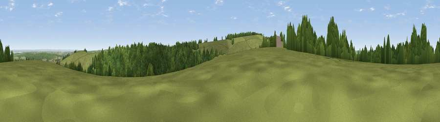

Viewpoint near Calbourne
#28118 in England · top 60% of its area beats it · near CalbourneWhere it is
The exact computed spot (SZ 44975 86775). Click the marker for map links.
The view, rendered

A 360° render of this exact spot computed from the terrain model, tree cover and land cover — summer colours, afternoon light, calibrated against photographs of famous viewpoints. Real trees, hedges and buildings will differ in detail.
The panorama
Grey silhouette: terrain skyline in each direction (720 bearings, Earth curvature and refraction included). Dashed green: skyline with trees (+15 m) and buildings (+8 m) as obstacles. Blue strip: how far the ground is visible on each bearing.
Where the view opens
Wedge length = distance to the farthest visible ground on that bearing (vegetation-aware). Rings at 10, 25 and 50 km.
What fills the view
48% grassland · 41% woodland · 5% cropland · 4% water · 1% built-up
Angular shares of the visible panorama (visual magnitude), not map area. Landscape diversity 0.47 (0–1 Shannon).
Key numbers
More beautiful places nearby
The staircase of upgrades: each row has a higher view potential than everything closer. Driving times are estimates from straight-line distance, calibrated against real road routing — check an actual route before setting out.
| Place | Direction | Drive | Score |
|---|---|---|---|
| Little Down | WSW · 2 km | ~5 min | 66.2 |
| Bowcombe Down | ENE · 2 km | ~6 min | 70.9 |
| Viewpoint near Carisbrooke | ENE · 3 km | ~7 min | 72.1 |
| Viewpoint near Gatcombe | ESE · 3 km | ~8 min | 72.3 |
| Limerstone Down | SSW · 3 km | ~8 min | 84.5 |
| Mottistone Down | WSW · 5 km | ~11 min | 87.2 |
| St Catherines Hill | SSE · 10 km | ~20 min | 87.6 |
| Viewpoint near Chale | SSE · 11 km | ~21 min | 88.3 |
50.67890, -1.36482 · source: screening · position refined by local search. Computed location — check access rights before visiting.